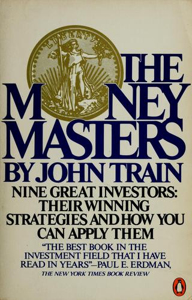

约翰·特雷恩（John Train）1928年生于纽约，格罗顿中学毕业后进入哈佛大学，1950年获学士学位，1951年获硕士学位，其间担任《哈佛讽刺》（Harvard Lampoon）编辑、西格奈特社（Signet Society）社长。1953年，他与乔治·普林顿（George Plimpton）等人一起创办《巴黎评论》（The Paris Review），出任首任执行编辑。此后他转入华尔街，创办投资顾问公司Train, Babcock Advisors，并长期为《华尔街日报》《福布斯》《金融时报》撰写专栏。1980年，Harper & Row出版了他的《The Money Masters》，初版296页；该书曾以《股市大亨》出版中文译本。此后他又写了《The New Money Masters》（1989），2000年再把前两本的人物合并、更新为《Money Masters of Our Time》。这三本书人物有重叠，却不是同一本书的不同书名。特雷恩2022年8月13日在缅因州罗克波特去世，享年94岁。
《The Money Masters》选了九位背景迥异的投资者，每人一章：本杰明·格雷厄姆（"领航者"）、沃伦·巴菲特（"企业的一部分"）、T. 罗·普莱斯（"成长的沃土"）、约翰·邓普顿（"万物皆有时"）、菲利普·费雪（"投资工程师"）、保罗·卡伯特（"现实主义者"）、拉里·蒂施（"实用主义者"）、斯坦利·克罗尔（"我们即将死去的人……"）与罗伯特·威尔逊（"给郁金香打气"）。特雷恩没有把九人硬拗成一套统一方法，书里反复出现的是具体案例：他写IBM股价在1960年代末停在300美元上下，此后十年每股盈利增长700%、股息增长1000%，股价却始终没能再往上突破，他把这类被市场供上神坛、提前透支未来十年增长的股票称为"宗教股"（religion stock）。他记述自己判断H&R Block被低估的过程——直接找创始人理查德·布洛克（Richard Bloch）谈过之后发现，华尔街几乎没有分析师跟踪这家公司，反倒成了买入的理由。书里还引了得克萨斯"纺锤顶"（Spindletop）油田的旧事：当年涌入的钻探者多到"据说可以踩着一座座井架从这头走到那头"，投进地下的资本比采出的石油还多，用来提醒读者提防扎堆的投机热潮。在巴菲特一章里，特雷恩记下他招人的办法——招聘表只需一行，"你是个偏执狂吗？"（Are you a fanatic?）——以及他对特励达（Teledyne）的亨利·辛格尔顿（Henry Singleton）的评价："在美国企业界，他有着最好的资本配置与运营纪录"，能在竞争激烈的行业里做到"资产回报率50%"。全书收尾处，特雷恩列出八条不该做的事——追热门股、追时髦行业、追新股、囤纯成长股、死守蓝筹股、迷信技术分析等——作为九章案例之后的反面清单。
这本书出版后，评价并不一致。《纽约时报书评》的保罗·埃尔德曼（Paul E. Erdman）在书封上留下一句话："这是我这些年读到的投资类书籍中最好的一本"（The best book in the investment field that I have read in years）。而《科克斯书评》（Kirkus Reviews）的判断更保留，称此书"整体而言更像是一本娱乐读物，而非教科书"（more entertaining, all told, than instructive），并指出九位投资者除了"一身怪癖"（a wealth of personal eccentricities）几乎找不出共同点——格雷厄姆靠资产负债表吃饭，卡伯特凭直觉下注，费雪押注科技成长股，路数彼此抵触。特雷恩自己在书中也承认，未必能从这些迥异的从业者身上提炼出单一定律，能确定的只是纪律与专注贯穿始终。
这本书写于1980年，格雷厄姆已于1976年去世，巴菲特尚未成为家喻户晓的名字，伯克希尔股价还在300美元上下——特雷恩记录的是这九个人被神化之前的样子。四十多年后回头看，价值、成长、宏观择时、做空、大宗商品几条路子后来都各自跑出过赢家，倒印证了特雷恩当年的判断：投资没有一条放之四海而皆准的公式。这本书对今天的读者有用之处，不在于抄一份现成的选股清单，而在于那份"不该做的事"——先弄清楚哪些路子大概率会亏钱，再去谈自己该怎么赚。